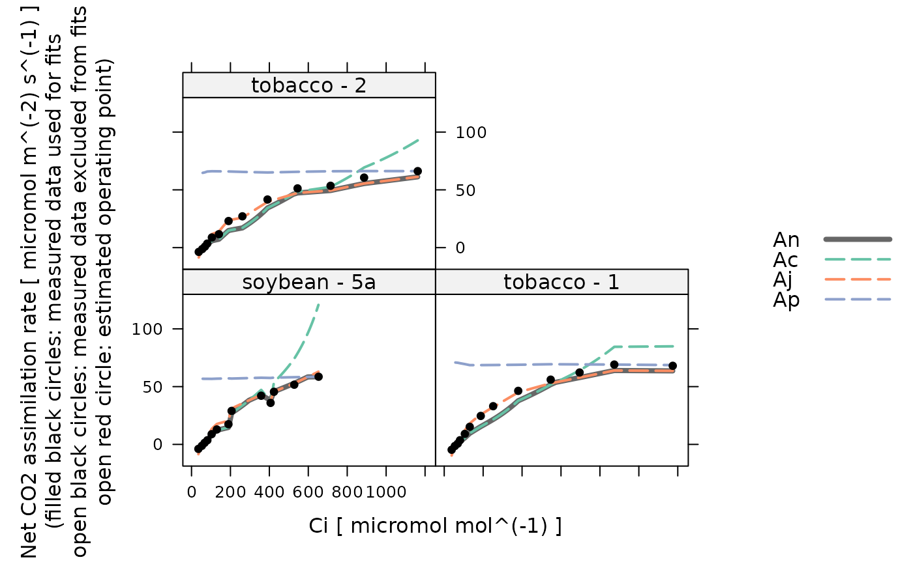

Make an initial guess of "Variable J" model parameter values for one curve
initial_guess_c3_variable_j.RdCreates a function that makes an initial guess of "variable J" model parameter
values for one curve. This function is used internally by
fit_c3_variable_j.
Values estimated by this guessing function should be considered inaccurate, and should always be improved upon by an optimizer.
Usage
initial_guess_c3_variable_j(
alpha_g,
alpha_old,
alpha_s,
alpha_t,
Gamma_star,
cc_threshold_rd = 100,
atp_use = 4.0,
nadph_use = 8.0,
a_column_name = 'A',
ci_column_name = 'Ci',
etr_column_name = 'ETR',
j_norm_column_name = 'J_norm',
kc_column_name = 'Kc',
ko_column_name = 'Ko',
oxygen_column_name = 'oxygen',
phips2_column_name = 'PhiPS2',
qin_column_name = 'Qin',
rl_norm_column_name = 'RL_norm',
total_pressure_column_name = 'total_pressure',
tp_norm_column_name = 'Tp_norm',
vcmax_norm_column_name = 'Vcmax_norm'
)Arguments
- alpha_g
A dimensionless parameter where
0 <= alpha_g <= 1, representing the proportion of glycolate carbon taken out of the photorespiratory pathway as glycine.alpha_gis often assumed to be 0. Ifalpha_gis not a number, then there must be a column inrc_exdfcalledalpha_gwith appropriate units. A numeric value supplied here will overwrite the values in thealpha_gcolumn ofrc_exdfif it exists.- alpha_old
A dimensionless parameter where
0 <= alpha_old <= 1, representing the fraction of remaining glycolate carbon not returned to the chloroplast after accounting for carbon released as CO2.alpha_oldis often assumed to be 0. Ifalpha_oldis not a number, then there must be a column inrc_exdfcalledalpha_oldwith appropriate units. A numeric value supplied here will overwrite the values in thealpha_oldcolumn ofrc_exdfif it exists.- alpha_s
A dimensionless parameter where
0 <= alpha_s <= 0.75 * (1 - alpha_g)representing the proportion of glycolate carbon taken out of the photorespiratory pathway as serine.alpha_sis often assumed to be 0. Ifalpha_sis not a number, then there must be a column inrc_exdfcalledalpha_swith appropriate units. A numeric value supplied here will overwrite the values in thealpha_scolumn ofrc_exdfif it exists.- alpha_t
A dimensionless parameter where
0 <= alpha_t <= 1representing the proportion of glycolate carbon taken out of the photorespiratory pathway as CH2-THF.alpha_tis often assumed to be 0. Ifalpha_tis not a number, then there must be a column inrc_exdfcalledalpha_twith appropriate units. A numeric value supplied here will overwrite the values in thealpha_tcolumn ofrc_exdfif it exists.- Gamma_star
The CO2 compensation point in the absence of day respiration, expressed in
micromol mol^(-1). IfGamma_staris not a number, then there must be a column inrc_exdfcalledGamma_starwith appropriate units. A numeric value supplied here will overwrite the values in theGamma_starcolumn ofrc_exdfif it exists.- cc_threshold_rd
An upper cutoff value for the chloroplast CO2 concentration in
micromol mol^(-1)to be used when estimatingRL.- atp_use
The number of ATP molecules used per C3 cycle.
- nadph_use
The number of NADPH molecules used per C3 cycle.
- a_column_name
The name of the column in
rc_exdfthat contains the net assimilation inmicromol m^(-2) s^(-1).- ci_column_name
The name of the column in
rc_exdfthat contains the intercellular CO2 concentration inmicromol mol^(-1).- etr_column_name
The name of the column in
rc_exdfthat contains the electron transport rate as estimated by the measurement system inmicromol m^(-2) s^(-1).- j_norm_column_name
The name of the column in
rc_exdfthat contains the normalizedJvalues (with units ofnormalized to J at 25 degrees C).- kc_column_name
The name of the column in
rc_exdfthat contains the Michaelis-Menten constant for rubisco carboxylation inmicromol mol^(-1).- ko_column_name
The name of the column in
rc_exdfthat contains the Michaelis-Menten constant for rubisco oxygenation inmmol mol^(-1).- oxygen_column_name
The name of the column in
exdf_objthat contains the concentration of O2 in the ambient air, expressed as a percentage (commonly 21% or 2%); the units must bepercent.- phips2_column_name
The name of the column in
rc_exdfthat contains values of the operating efficiency of photosystem II (dimensionless).- qin_column_name
The name of the column in
rc_exdfthat contains values of the incident photosynthetically active flux density inmicromol m^(-2) s^(-1).- rl_norm_column_name
The name of the column in
rc_exdfthat contains the normalizedRLvalues (with units ofnormalized to RL at 25 degrees C).- total_pressure_column_name
The name of the column in
rc_exdfthat contains the total pressure inbar.- tp_norm_column_name
The name of the column in
rc_exdfthat contains the normalizedTpvalues (with units ofnormalized to Tp at 25 degrees C).- vcmax_norm_column_name
The name of the column in
rc_exdfthat contains the normalizedVcmaxvalues (with units ofnormalized to Vcmax at 25 degrees C).
Details
The variable J method is a fitting procedure for estimating values of
alpha_g, alpha_old, alpha_s, alpha_t,
Gamma_star, J_at_25, RL_at_25, tau,
Tp_at_25, and Vcmax_at_25 from a measured C3 CO2 response curve
+ chlorophyll fluorescence. For more information about these parameters, see
the documentation at calculate_c3_variable_j and
calculate_c3_assimilation.
Here, we make an estimate for tau by noting that gas exchange
measurement systems equipped with chlorophyll fluorometers typically make an
estimate for the electron transport rate (ETR), which is essentially
synonymous with the actual RuBP regeneration rate. Thus, tau can be
estimated by inverting the equation for J_actual:
tau = ETR / (Qin * PhiPSII)
Estimates of the remaining parameters are calculated by setting Cc = Ci
and then calling initial_guess_c3_aci.
Value
A function with one input argument rc_exdf, which should be an
exdf object representing one C3 CO2 response curve. The return value of
this function will be a numeric vector with ten elements, representing the
values of alpha_g, alpha_old, alpha_s, alpha_t,
J_at_25, RL_at_25, tau, Tp_at_25, and
Vcmax_at_25 (in that order).
Examples
# Read an example Licor file included in the PhotoGEA package
licor_file <- read_gasex_file(
PhotoGEA_example_file_path('c3_aci_1.xlsx')
)
# Define a new column that uniquely identifies each curve
licor_file[, 'species_plot'] <-
paste(licor_file[, 'species'], '-', licor_file[, 'plot'] )
# Organize the data
licor_file <- organize_response_curve_data(
licor_file,
'species_plot',
c(9, 10, 16),
'CO2_r_sp'
)
# Calculate the total pressure in the Licor chamber
licor_file <- calculate_total_pressure(licor_file)
# Calculate temperature-dependent values of C3 photosynthetic parameters
licor_file <- calculate_temperature_response(licor_file, c3_temperature_param_bernacchi)
# Create the guessing function; here we set all alpha values to 0 and use the
# temperature-dependent values of Gamma_star calculated above
guessing_func <-
initial_guess_c3_variable_j(alpha_g = 0, alpha_old = 0, alpha_s = 0, alpha_t = 0, Gamma_star = '')
# Apply it and see the initial guesses for each curve
str(by(licor_file, licor_file[, 'species_plot'], guessing_func))
#> List of 3
#> $ soybean - 5a: num [1:10] 0 0 0 0 56.6 ...
#> $ tobacco - 1 : num [1:10] 0 0 0 0 55.6 ...
#> $ tobacco - 2 : num [1:10] 0 0 0 0 55.9 ...
# Calculate simulated A-Ci curves based on the guesses and compare them to the
# actual data
calculated_aci <- do.call(rbind, by(
licor_file,
licor_file[, 'species_plot'],
function(x) {
param <- guessing_func(x)
x <- cbind(
x,
calculate_c3_variable_j(x, param[1], param[3], param[4], param[5], param[7], param[8])
)
cbind(x,
calculate_c3_assimilation(
x,
param[1], param[2], param[3], param[4], param[5], param[6], param[7], param[9], param[10]
)
)
}
))
lattice::xyplot(
Ac + Aj + Ap + An + A ~ Cc | species_plot,
data = cbind(licor_file, calculated_aci)$main_data,
type = 'b',
auto = TRUE,
grid = TRUE
)
